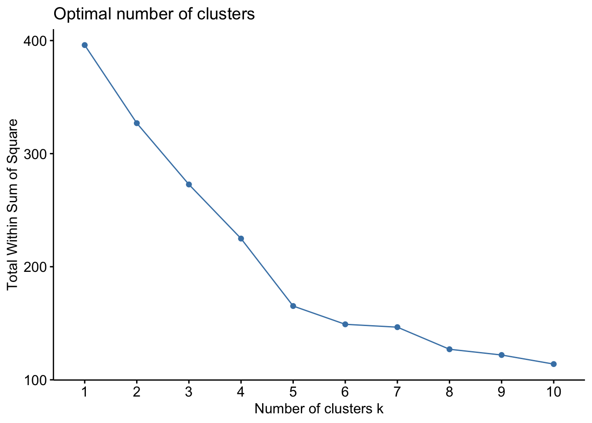
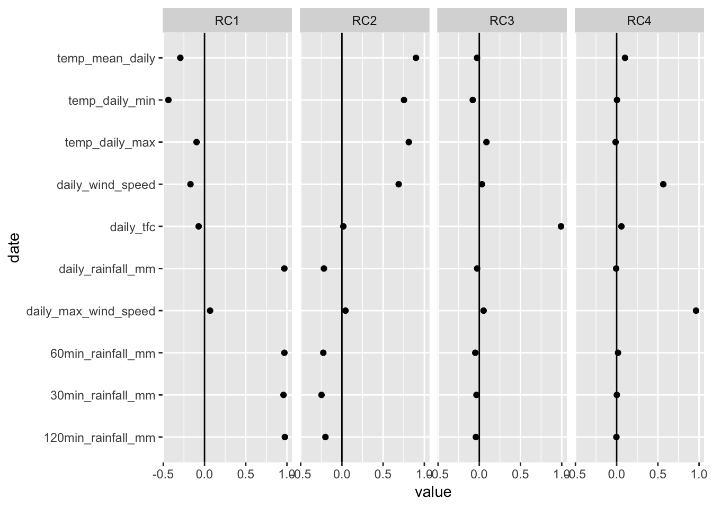
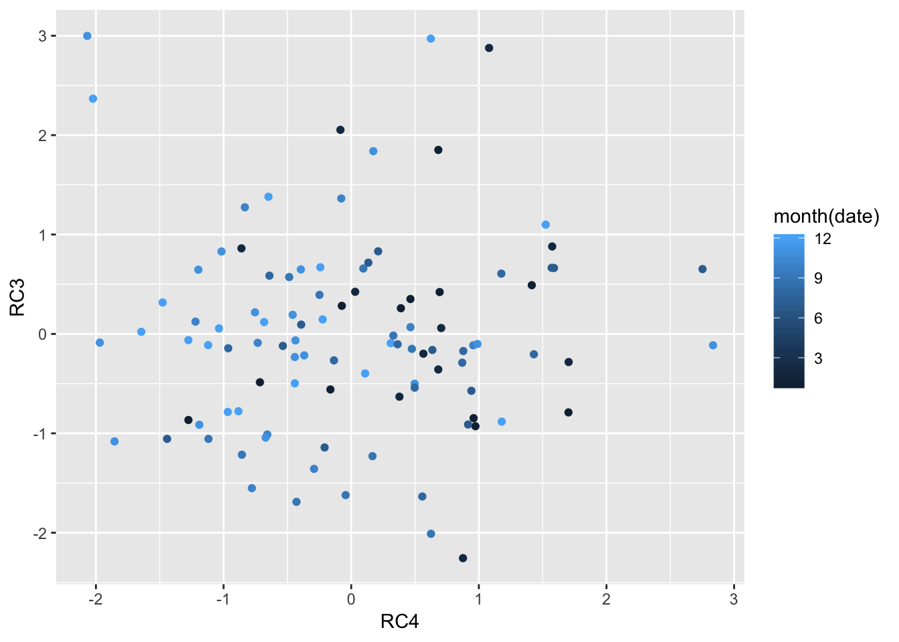

Chapter 4 Cluster Analysis
4.1 K-Means Clustering
A k-means clustering is a user-defined clustering algorithm that iteratively changes its centroid based on the lowest total sum of square distances between the centroids and each data point. We use this to help evaluate our visual check of clusters in the factor analysis conducted earlier.
Daily Traffic & Weather Data
fa_daily_cluster<-fa_daily_stats[['scores']] %>%
unclass() %>%
as_tibble(rownames = "date")
fa_daily_cluster<-fa_daily_cluster %>%
column_to_rownames(var = "date")Optimal Number of Clusters
We use two methods to determine the optimal number of clusters based on the lowest possible value total within sum of square distance between the centroid and each data point in the cluster. For the daily weather and traffic flow data set, we choose number of clusters = 7.
fviz_nbclust(fa_daily_cluster, kmeans, method = "wss")
fviz_nbclust(fa_daily_cluster, kmeans, method = "silhouette")
daily_kmeans_clusters <- kmeans(fa_daily_cluster, centers = 7, nstart = 50)
fviz_cluster(daily_kmeans_clusters, data = fa_daily_cluster)
Hourly Traffic & Weather Data
fa_hourly_cluster<-fa_hourly_stats[['scores']] %>%
unclass() %>%
as_tibble(rownames = "local_time")
fa_hourly_cluster<-fa_hourly_cluster %>%
column_to_rownames(var = "local_time")Optimal Number of Clusters
The optimal number of clusters chosen for the hourly weather data set is 4, to maximise the total distance within sum of squares
fviz_nbclust(fa_hourly_cluster, kmeans, method = "wss")
fviz_nbclust(fa_hourly_cluster, kmeans, method = "silhouette")
hourly_kmeans_clusters <- kmeans(fa_hourly_cluster, centers = 4, nstart = 50)
fviz_cluster(hourly_kmeans_clusters, data = fa_hourly_cluster)4.2 Data Analysis
The k-means clustering analysis on both data set indicate there is a categorical similarity between data points. These may indicate